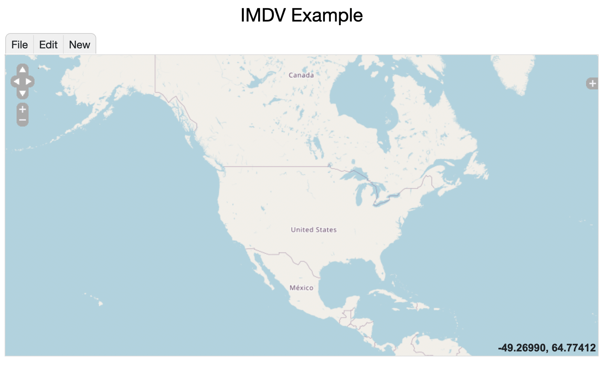

:navtop
:heading Create a New Map
From the entry menu choose "Pick a Type...". Under GIS Data select "Integrated Map Data":
Enter a name for your map. You can ignore the file. Enter some description.
Note: the description is wiki text.
Once created you will have the initial display below. The File menu allows you to save
changes to your map. The Edit menu
Image 3: Initial Display
:br
:heading Basic Editing
Select the New menu to see the different map glyph types that can be added.
There are basic shapes - Marker, Label, Lines, Box, etc.
Selecting a shape click and/or click-drag in the map to create the shape.
Once something is created in the map a legend is shown on the left.
Clicking on the toggle arrow (
)
shows more details for the glyph. The
link
takes brings up an edit window for that glyph. This allows you to specify
the drawing style and other properties.
The Edit Menu allows you to select glyphs, cut/copy/paste, etc.
{kind=link}
{kind=link}
{kind=link}
{kind=link}
{kind=link}
{kind=link}
{kind=link}